An application of Network Flow algorithms
April 2019
some x number of people
some y number of shifts
each person may or may not be assigned to any shift; there are possible schedules
that’s a lot
we have to account for matching shift availability too
for each person’s availability, iterate possible shifts in order
if the shift is available, and their total hours is below some limit, assign the person to that shift
if no shifts are available, and their total hours is below some minimum, unassign some person from some filled shift, and take their place
repeatedly displace and reassign people until all availability is satisfied
repeat for every person
upper bound of reassignments for an optimal schedule
Problem: if a perfect schedule does not exist, this algorithm may never terminate
check all possible schedules
check how many people are assigned to shifts that fit their availability
keep the schedule with the most matches
Problem: for 100 employees and 300 shifts, there are 10^92 possible schedules (about a trillion schedules per atom in the observable universe)
we don’t have time for that
iterate availability and assign shifts in order
if no shifts are available, assign a shift outside of the person’s availability
only need to make x assignments
Pros: most impressive number of mismatches of all methods
Cons: we want to minimize the number of mismatches
Now we have to step back.
Suppose we have some nodes.
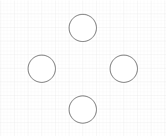
Now we have to step back.
Suppose we have some nodes.
Lets give them values.
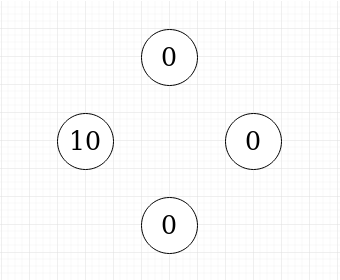
Now we have to step back.
Suppose we have some nodes.
Lets give them values. And edges.
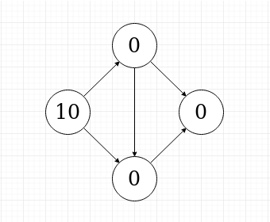
We can push some amount of flow along these edges to move it to other nodes.
This can tell us whether two nodes are connected along some path, but not much more.
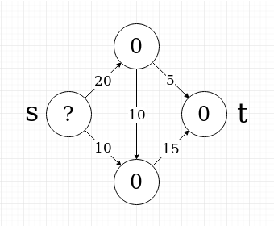
A natural problem is wanting to know the maximal amount of flow that can be pushed from one node to another.
Here, we would like to know how much flow we could push from the source “s” to the sink “t”. (try it)
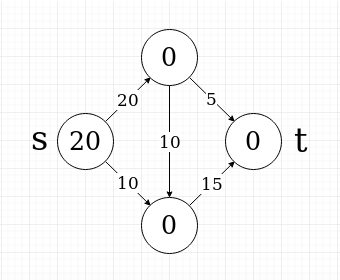
A natural problem is wanting to know the maximal amount of flow that can be pushed from one node to another.
Here, we would like to know how much flow we could push from the source “s” to the sink “t”. (try it)
It turns out to be 20.
The Max Flow problem can be solved in a relatively short amount of time in relation to the number of nodes and edges.
By carefully pushing flow along paths and filling the number of free paths available, a maximal solution can be found.
This is implemented in the Edmonds-Karp algorithm; the details of how it works are beyond this demo.
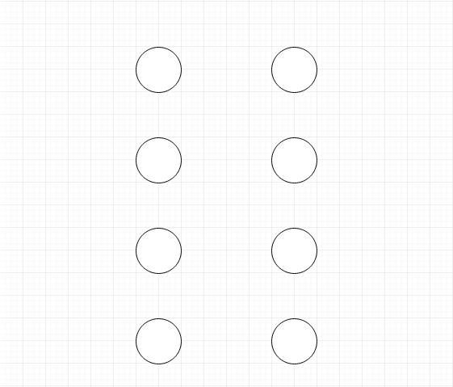
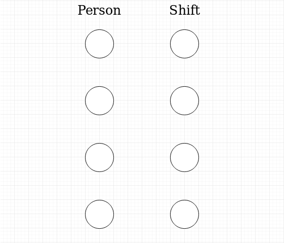
Each person is given a node
Each shift is also given a node
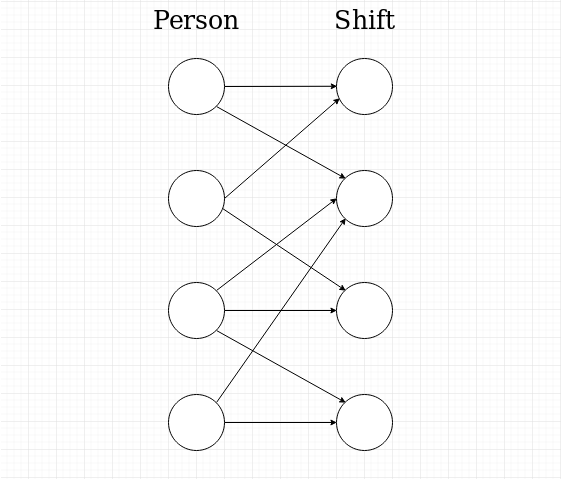
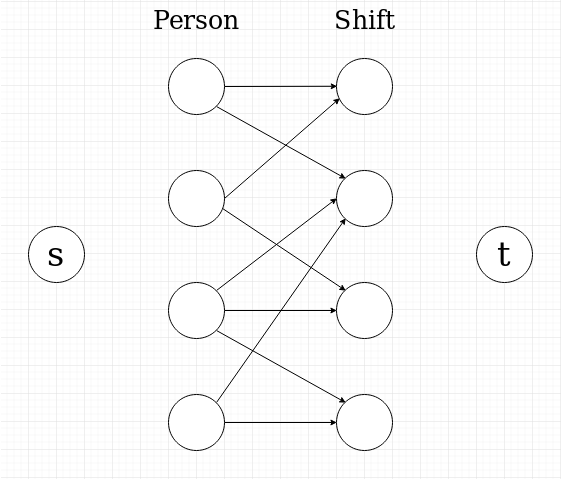
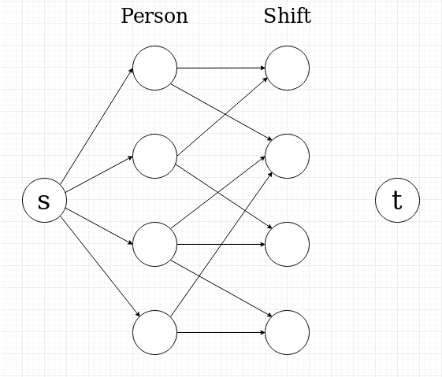
The central edges have a capacity of 1, where a flow of 1 means the person is assigned to the shift, and a flow of 0 means they are not.
We can add edges from the source to each person, with capacities equal to the max number of shifts that can be assigned for that person.
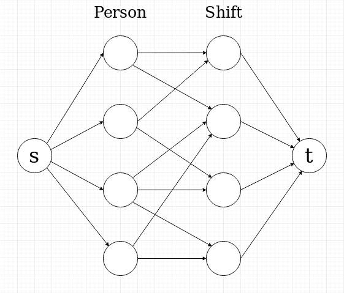
The central edges have a capacity of 1, where a flow of 1 means the person is assigned to the shift, and a flow of 0 means they are not.
We can add edges from the source to each person, with capacities equal to the max number of shifts that can be assigned for that person.
We can add edges from each shift to the sink, with capacities equal to the number of people to be assigned to that shift.
With the shift matching problem now set up as a flow network, it can be solved to find the maximum flow that can be pushed from s to t. We can use a modified version of the Edmonds-Karp algorithm which ensures a shift assignment does not exceed a person’s maximum number of hours.
We can keep track of the central edges used to find the max flow. Central edges assigned a flow value of 1 indicate the person is assigned to the shift.
By reversing the graph back into availability assignments, we obtain a schedule with a maximal number of matches between availabilty and shifts.
By modifying the reduction to the flow network graph, we can implement additional features:
Edges with different priority can be used, which can allow for some shifts to be suggested outside of a person’s stated availability in order to fill staff requirements for shifts.
Shifts can be grouped by location to prioritize being assigned to the same location in the same day, or to prioritize being assigned one location over any other.
Specific people can be given priority for being assigned their available shifts, even if it means decreasing the maximal number of matches.
Soft priorities can be added to assign shifts to people in a specific order, but allow flexibility to accomodate people with limited availability.
To re-schedule some of a schedule and keep some assignments, the process can be repeated with just the unassigned people and shifts.
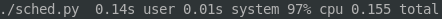 (Yes)
That’s it.
Press C for a table of contents.
Have a cool day.